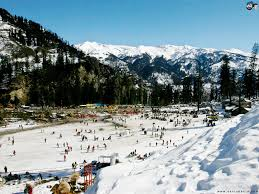
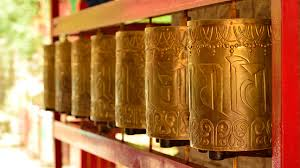
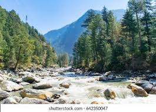
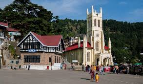

Manali

One of the most popular hill stations in Himachal, Manali offers the most magnificent views of the Pir Panjal and the Dhauladhar ranges covered with snow for most parts of the year.
Manali has many trekking options around it, making it a great base for exploring this side of Himalayas
River Beas provides great rafting options in the nearby town of Kullu. Adjoining Parvati river, lies the Parvati Valley with Kasol, Manikaran, Tosh and small villages attracting travellers for longer stays
It snows the most in the months of January & February followed by December and March. If you're very lucky, you might find some snow in April.
Dharamshala

Dharamshala or Dharamsala city is located in Kangra district at a distance of 18 km from Kangra city
Dharamsala is separated as upper and lower divisions with different altitudes.
The lower division is the Dharamsala town itself. whereas, the upper-division is located 3km away and popularly known as Mcleodganj.
Dharamsala is prominently visited for the bus connections and the bustling market.
Kasol

Kasol is a quaint little village in Himachal situated along the banks of the river Parvati.
Commonly known as the 'Amsterdam of India', Kasol is a tourist attraction that is rapidly gaining fame as a popular hub for trekkers, backpackers, and nature lovers
Kasol is inhabited by a huge number of people from Israel, which is discernible from the plenteously available Israeli food, and the street signposts inscribed in Hebrew
Kasol has quite a few streetside cafes which serve delicious food, and the experience of sitting and enjoying a meal amidst the dark green forests and the awe-inspiring mountains make the meal even more enjoyable.
Shimla

Shimla is the capital Himachal Pradesh in India and a popular hill-station among Indian families and honeymooners. Situated at the height of 2200m, Shimla was the summer capital of British India
Shimla still retains its old-world charm with beautiful colonial architecture, pedestrian-friendly Mall Road and the ridge lined up with multiple shops, cafes and restaurants.
The weather is pleasant for most of the months with tourists flocking especially during the summer months. The winters are cold with some days of snow from mid-December till February end.
Shimla is often covered with nearby towns of Kufri, a hill-station almost always covered by snow and Chail, famous for a huge palace and the highest cricket ground in the world.